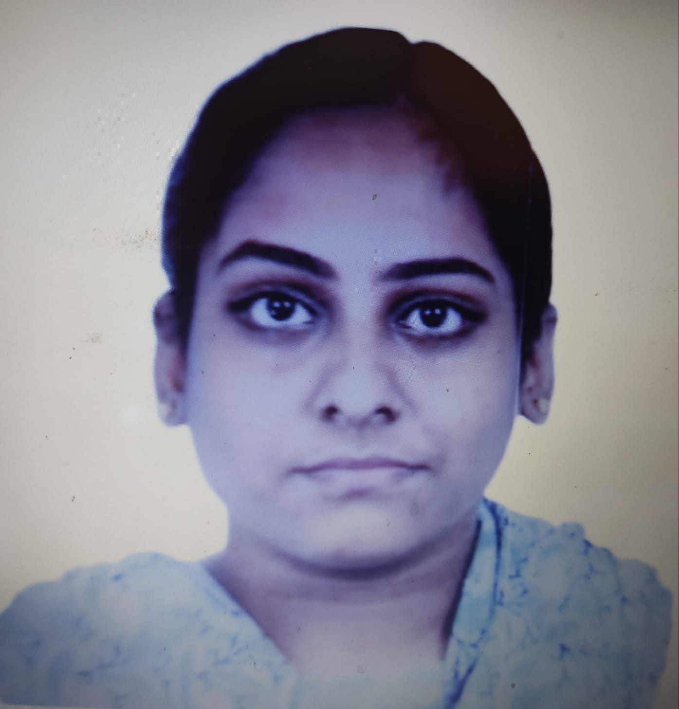

Pooja Jayashankar
About me
Projects
Skills Acquired
Contact me

About me
I am Pooja Jayashankar.
I completed BE Biomedical Engineering in Saveetha Engineering College with a CGPA of
8.86
with minors in DataScience.
I did my 10
th
and 12
th
in Everwin Matriculation Higher Secondary Schol.
I secured school first with
98%
in SSLC Exams and
89%
in HSC Exams.
I am a fresher looking forward to work in an IT/Software company oppurtunity.
Project
I did a Mini Project on a Review of biomaterials to design a knee menisci.
My final year project was on the topic Jaundice risk prediction using Machine learning model.
We used Data collection from kaggle website ,data cleaning methods and data validation and finally data visualization.
Then finnaly deployed the data in OneClass SVM, XGBoost , Random Forest, COmplement Naive Bayes.